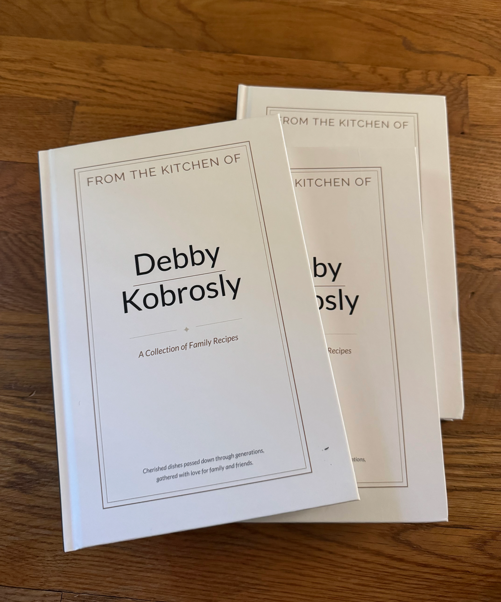
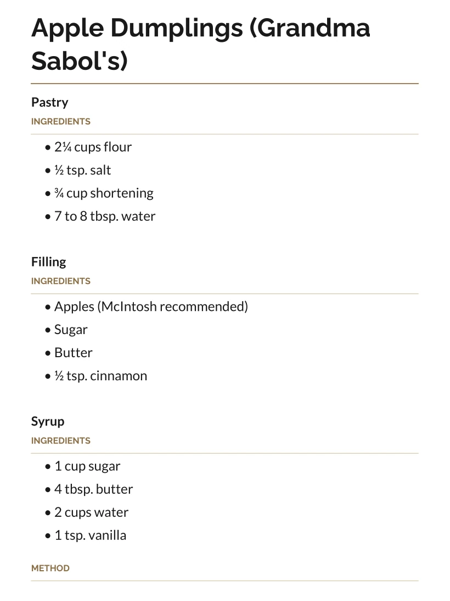

written by Roni Kobrosly on 2026-05-05 | tags: agentic ai food

For years my mother had a secret squirreled away on her Dell machine 💻. She was assembling a collection of her favorite custom recipes and recipes from friends in a large Word document. This wasn't a handful of recipes; there were 100+ in total. Well, I was able to get my hands on it!
There were a number of true bangers there and with Mother's Day coming up, I figured a memorable gift would be to publish and print it for family and friends. There were a few issues though:
A perfect use case for my home, open source agentic pipeline (a relatively lightweight Qwen 3.6 27B loaded into the Pi agent harness)! You might not be aware but as of mid 2026, open source LLMs are now half a step behind the expensive, proprietary frontier models. Honestly though, with benchmark saturation and organizations focusing all of their effort on maximizing some metric from a static test that is publicly-available, I'm not sure a 1-3% difference in some SWE benchmark means anything. There might not be any gap at all when it comes to real world performance. Not to mention the costs are an order of magnitude lower...
Qwen and Pi took a task that would have taken 40+ hours into 5, tops. Qwen 3.6 natively reads images, so all I needed to do was point it to a folder with 30-ish jpegs. I used Lulu.com for the printing, and voilà, you get what is shown in the above header image!
The book is freely-available as a PDF, if you're interested. I highly recommend the Apple Dumplings. You won't be disappointed.
Happy Mother's Day!! ♡♡♡
